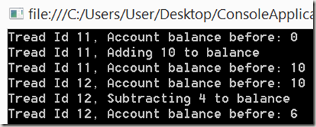
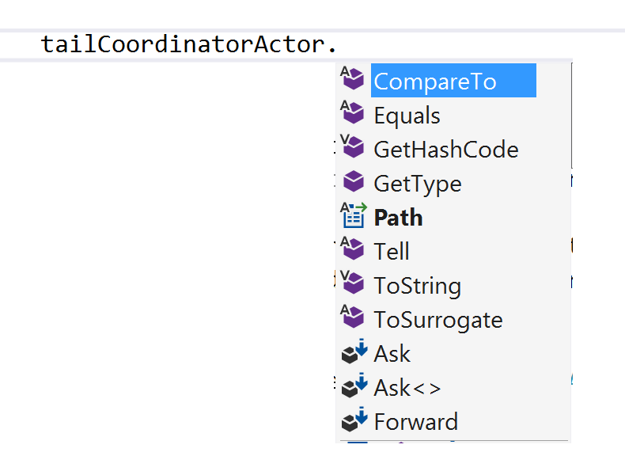

A while back I became quite interested in messaging, I have always used things like Signalr,WCF, MSMQ, and NServiceBus, which are all cool tech for sure. I did however, feel I wanted to learn a bit more, so spent quite a few months experimenting with thing like
Whilst in this messaging stage of my life I came across something that really spiked my interest which is the use of "Actor(s)" for distributed programming. Actors pop up in various frameworks such as:
This article will be about using Akka.NET which is a pretty complete port of the original Akka, so you will pretty much see how that works by the end of this too I hope.
TODO
TODO
This is not the 1st time I have written about Actor models, in fact a while back I wrote quite a long post (which is good background reading) about an Actor model that I wrote for NetMQ (the .NET port of ZeroMQ). You can read that post here:
https://sachabarbs.wordpress.com/2014/09/05/zeromq-7-a-simple-actor-model/
I was very pleased but this actually made its way into the the actual NetMQ codebase, and is fully documented here:
http://netmq.readthedocs.org/en/latest/actor/
This next bit of text is lifted directly from the post/documentation that I had previous written, though you should still read those if you are interested in seeing the specific NetMQ implementation works.
Anyway lets dive it shall we........
Here is what Wikipedia has to same in the introduction to what an Actor Model is.
The actor model in computer science is a mathematical model of concurrent computation that treats “actors” as the universal primitives of concurrent digital computation: in response to a message that it receives, an actor can make local decisions, create more actors, send more messages, and determine how to respond to the next message received.
….
….
The Actor model adopts the philosophy that everything is an actor. This is similar to the everything is an object philosophy used by some object-oriented programming languages, but differs in that object-oriented software is typically executed sequentially, while the Actor model is inherently concurrent.
An actor is a computational entity that, in response to a message it receives, can concurrently:
There is no assumed sequence to the above actions and they could be carried out in parallel.
Decoupling the sender from communications sent was a fundamental advance of the Actor model enabling asynchronous communication and control structures as patterns of passing messages.
Recipients of messages are identified by address, sometimes called “mailing address”. Thus an actor can only communicate with actors whose addresses it has. It can obtain those from a message it receives, or if the address is for an actor it has itself created.
The Actor model is characterized by inherent concurrency of computation within and among actors, dynamic creation of actors, inclusion of actor addresses in messages, and interaction only through direct asynchronous message passing with no restriction on message arrival order.
http://en.wikipedia.org/wiki/Actor_model
How I like to think of Actors is that they may be used to alleviate some of synchronization concerns of using shared data structures. This is achieved by your application code talking to actors via message passing/receiving. The actor itself may pass messages to other actors, or work on the passed message itself. By using message passing rather than using shared data structures, it may help to think of the actor (or any subsequent actors its send messages to) working on a copy of the data rather than working on the same shared structures. Which kind of gets rid of the need to worry about nasty things like lock(s) and any nasty timing issues that may arise from carrying out multi threaded code. If the actor is working with its own copy of the data then we should have no issues with other threads wanting to work with the data the actor has, as the only place that data can be is within the actor itself, that is unless we pass another message to a different actor. If we were to do that though the new message to the other actor would also be a copy of the data, so would also be thread safe.
I hope you see what I am trying to explain there, may be a diagram may help.
A fairly common thing to do is have multiple threads running to speed things up, but then you realise that your threads need to mutate the state of some shared data structure, so then you have to involve threading synchronization primitives (most commonly lock(..) statements, to create your user defined critical sections). This will work, but now you are introducing artificial delays due to having to wait for the lock to be released so you can run Thread X’s code.
To take this one step further, lets see some code that may illustrate this further, imagine we had this sort of data structure representing a very slim bank account
namespace ConsoleApplication1
{
public class Account
{
public Account()
{
}
public Account(int id, string name,
string sortCode, decimal balance)
{
Id = id;
Name = name;
SortCode = sortCode;
Balance = balance;
}
public int Id { get; set; }
public string Name { get; set; }
public string SortCode { get; set; }
public decimal Balance { get; set; }
}
}
Nothing fancy there, just some fields. So lets now move onto looking at some threading code, I have chosen to just show two threads acting on a shared Account instance.
using System;
using System.Collections.Generic;
using System.Linq;
using System.Management.Instrumentation;
using System.Text;
using System.Threading;
using System.Threading.Tasks;
namespace ConsoleApplication1
{
class Program
{
private object syncLock = new object();
private Account clientBankAccount;
public Program()
{
clientBankAccount = new Account(1,"sacha barber","112233",0);
}
public async Task Run()
{
try
{
await Task.Run(() =>
{
Console.WriteLine("Tread Id {0}, Account balance before: {1}",
Thread.CurrentThread.ManagedThreadId, clientBankAccount.Balance);
lock (syncLock)
{
Console.WriteLine("Tread Id {0}, Adding 10 to balance",
Thread.CurrentThread.ManagedThreadId);
clientBankAccount.Balance += 10;
Console.WriteLine("Tread Id {0}, Account balance before: {1}",
Thread.CurrentThread.ManagedThreadId, clientBankAccount.Balance);
}
});
await Task.Run(() =>
{
Console.WriteLine("Tread Id {0}, Account balance before: {1}",
Thread.CurrentThread.ManagedThreadId, clientBankAccount.Balance);
lock (syncLock)
{
Console.WriteLine("Tread Id {0}, Subtracting 4 to balance",
Thread.CurrentThread.ManagedThreadId);
clientBankAccount.Balance -= 4;
Console.WriteLine("Tread Id {0}, Account balance before: {1}",
Thread.CurrentThread.ManagedThreadId, clientBankAccount.Balance);
}
});
}
catch (Exception e)
{
Console.WriteLine(e);
}
}
static void Main(string[] args)
{
Program p = new Program();
p.Run().Wait();
Console.ReadLine();
}
}
}
I have possible picked an example that you think may not actually happen in real life, and to be honest this scenario may not popup in real life, as who would do something as silly as crediting an account in one thread, and debiting it in another…we are all diligent developers, we would not let this one into the code would we?
To be honest whether the actual example has real world merit or not, the point remains the same, since we have more than one thread accessing a shared data structure, access to it must be synchronized, which is typically done using a lock(..) statement, as can be seen in the code.
Now don’t get me wrong the above code does work, as shown in the output below:

Perhaps there might be a more interesting way though!
The actor model, takes a different approach, where by message passing is used, which may involve some form of serialization as the messages are passed down the wire, which kind of guarantees no shared structures to contend with.

So that was a little introduction/catch up, so what will the rest of the article be about. Well the rest of the article will be about how to develop code in .NET which makes use of an Actor Model. We will be proceeding on to look at how to use Akka.NET, I will not be covering a Akka.NET version of the sample above but shall instead build apon a new Akka.NET sample.
As stated already Akka.NET is a direct port of Akka, and its pretty complete.
There is a truly excellent training guide with start to finish examples that you can go through, where it is nicely broken up into bite sized labs, there are 3 parts with around 6 labs in each. You can grab that from this url :
https://github.com/petabridge/akka-bootcamp
I strongly (see what I did there with my awesome <strong>strongly</strong> html skills) you read this, and have a go.
The rest of this article will be about a demo app, which I have shamelessly stolen from the completed part 1 labs from the https://github.com/petabridge/akka-bootcamp training guide. Its a great place to start, and the way I see it I am sharing the Akka.NET love, so they would be happy.
I will of course be adding a bit of new stuff, which is not covered.
Akka.NET is as already stated an actor framework for .NET. Akka.NET is made up of a couple of system level actors (which are not within your control, they are part of Akka.NET). These top level actors are known as "Guardians". You never really deal with these directly. Instead you are expected to create Actors within one of the following 2 contexts:
Lets see an example of how to create an actor within the actor system (don't
worry for now if this looks weird, the Props stuff here will be explained in
just a moment)
// make actor system
MyActorSystem = ActorSystem.Create("MyActorSystem");
// create top-level actors within the actor system
Props consoleWriterProps = Props.Create<ConsoleWriterActor>();
IActorRef consoleWriterActor = MyActorSystem.ActorOf(consoleWriterProps, "consoleWriterActor");
Props tailCoordinatorProps = Props.Create(() => new TailCoordinatorActor());
IActorRef tailCoordinatorActor = MyActorSystem.ActorOf(tailCoordinatorProps, "tailCoordinatorActor");
// blocks the main thread from exiting until the actor system is shut down
MyActorSystem.AwaitTermination();
It can be seen there is an
Akka.NET ActorSystem
which we are using here to create actors, where we use some strange
Props voodoo.. These actors will be supervised by the
Akka.NET guardians. Again we
will get onto supervision in a while.
Props is the object you use to create an actor. You MUST use
Props to create an actor within the main ActorSystem or within the scope of another
actor. But how can we use this Props thing?
There are different ways to create to create actors using Props,
let's see a few examples.
If the actor itself has a default constructor, we can use this form of Props
Props consoleWriterProps = Props.Create<ConsoleWriterActor>();
If however the actor constructor expects parameters, we can use this form of Props
Props someNonDefaultProps = Props.Create(() => new SomeNonDefaultActor(someDependency));
IActorRef someNonDefaultActor= MyActorSystem.ActorOf(someNonDefaultProps , "someNonDefaultActor");
There is also another way where you add a static factory method to the actual
actor class and have that return Props, and you make use of that.
In all of these cases a thing called an IActorRef is returned.
What's that I hear you ask. Well quite simply a IActorRef is a
handle to an actor within the system. If you have a IActorRef to an
actor, you can Tell/Ask that actor things. You can of course pass
IActorRef about.
The other thing to note with the Props class is that it acts as
a way of capturing (via closures that are captured the 1st time the actor is
created) the input parameters, such that the Props also act as a
factory for recreating the actor should it die (either by programatic choice or
via a supervising strategy).
We have seen how to create actors in the overall
Akka.NET system, and I also
elluded to the fact that you could create actors within the context of other
actors. So how do you do that. Well it is quite simple, and it builds on the
Props stuff we just covered. Here is an example:
public class TailCoordinatorActor : UntypedActor
{
protected override void OnReceive(object message)
{
if (message is StartTail)
{
var msg = message as StartTail;
Context.ActorOf(Props.Create(() => new TailActor(msg.ReporterActor, msg.FilePath)));
}
}
}
The important line is this one
Context.ActorOf(Props.Create(() => new TailActor(msg.ReporterActor, msg.FilePath)));
As stated above when you use the Conntext.ActorOf(..) you are
creating a new actor in the context of this actor. That means the newly created
actor is a child of the current actor. As such it becomes job of the current
actor to "Supervise" this new child actor. We will talk more
about this in a minute.
TODO
TODO
TODO
As stated already an IActorRef is an astracted handle to an
actual actor. By using the IActorRef you can perform all the common
requirements you could expect from a
Akka.NET actor.
Shown below is an example of what sort of methods are available to you:

There are a few special IActorRef(s) that you should be aware
of.
Self : That is the current actor, and is only valid within
an actorSender : That is the source of a message, and is only valid
within an actor
Whilst I highly recommend that you ensure that you always have the correct
IActorRef at hand, should you wish to send a message to it. With
possibly deep/complex heirarchies this may not always be possible. But fear not
Akka.NET has you covered
there. Recall I stated that there were several
Akka.NET level actors which
you could not use, known as "Guardians".Well these guys form a navigation/supervision system.
So you may use thier Paths along with any other actors/child actors you may have created,
which allow to get an IActorRef based on what is known as an "actor
selection" string.
Here is an example:
Context.ActorSelection("akka://MyActorSystem/user/validationActor").Tell(message);
Part of that Path ("MyActorSystem") comes from the place where you created the overall
Akka.NET actor system, which
was like this for the demo
MyActorSystem = ActorSystem.Create("MyActorSystem");
The next part is one of the special guardians path values ("user") within the
overall
Akka.NET actor system. From
there it is just a case of specifying the IActorRef we want.
You can read more about thee guradians within Akka.NET here:
TODO Grab Url
TODO Grab Url
TODO Grab Url
Ok so we have covered a bit of ground so far, we now know the following:
So its about time we did something with an actor isn't it. So lets do this. Lets see how we deal with sending (Tell) a message and receiving that within the destination actor.
The act of sending a message in
Akka.NET is done using a
IActorRef.Tell(..). An example of which is as follows:
consoleReaderActor.Tell(ConsoleReaderActor.StartCommand);
So now let' see how the receiver deals with this.
NOTE : I am using UntypedActor here but there is also a
TypedActor if you prefer to use that, which allows you to use a generic
Receive<T>(..) methods within the constructor of your actor
(Say. There are a whole bunch of other life cycle methods that you may override
in an actor, I will not be covering those though, I will leave that as an
excercise for the reader)
instead of having separate methods for each message type seen.It is a matter of
taste.
class ConsoleReaderActor : UntypedActor
{
public const string StartCommand = "start";
protected override void OnReceive(object message)
{
if (message.Equals(StartCommand))
{
....
}
}
}
Although I do not cover this in the demo app presented here, providing
you have a valid IActorRef you may of course ask it things.
This is done using the Ask() method.
TODO Grab Url
TODO Grab Url
TODO Grab Url
In order to test Akka.NET we must install a few more libraries, namely:
Both of which are available as Nuget packages. So once you have those we can create a simple test (I am using NUnit here), where the test may look something like this:
[TestFixture]
public class TailActorTests : TestKit
{
[Test]
public void Show_NotifyTailActor_When_Change_Is_Made_To_File()
{
string fullFilePath = @"c:\temp\AkkaTest.txt";
FileObserver fileObserver = new FileObserver(TestActor, fullFilePath);
fileObserver.Start();
File.WriteAllText(fullFilePath, "A test message from TailActorTests" +
DateTime.Now.ToString());
ExpectMsg<TailActor.FileWrite>(x => fullFilePath.Contains(x.FileName) );
}
}
There are a couple of things to note here, such as:
TestKit" this
is a special
Akka.NET base class that
allows things such as the ExpectMsg<T>(Predicate<T>> pred) that
you see aboveTestActor which you may make use ofExpectMsg<T>(Predicate<T>> pred)helper
methods to see if certain messages were seen by the TestActor
As I stated a while ago the demo app has been pretty much lifted from the Akka.NET training material. Let's just go through what the demo app does:
ConsoleReaderActor, which expects the user to
type the name of an open text file to monitor for changes.ValidationActor, which verifies whether the user
typed a correct file name inTailCoordinatorActor, which gets a
input file, and sets up a TailActor to starts listening for changes to the
input fileTailActor, which will listen for changes in the
input fileConsoleWriterActor, which will write out any
changes observed (Such as new text being input into the orginal text file
that is being tailed) to the console.
That's is all I wanted to say this time, I hope it may has been of interest to at least a few of you. As always if you like what you have seen, please take a minute to cast a vote, or leave a comment this are always appreciated